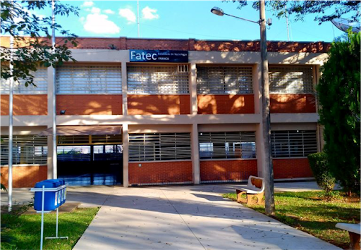

Tem como importãncia conhecer o perfil de seus alunos, mais especificamente os estudandes de Analise e Desenvolvimento de Sistemas (ADS). Por ser uma instituição de ensino publica, é interssante que saibam o perfil de seus alunos para que possam entender a realidade em que seus alunos vivem.
Um dos desafios foi o desenvolvimento do questionário de perfil e divulga-lo entre os estudandes de ADS para que pudessem responder e eviá-los, na qual um um dos alunos (Gabriel Jesus) ficou responsável de divulgar entre as turmas.
Outro desafio foi em adquirir conhecimentos em outras ferramentas para o Levantamento e processamento dos dados colhidos; e para o desenvolvimento de um softwere que seja acessível para outros usuários fazer as consultas dos resultados obtidos desse projeto de pesquisa.
Para o desenvolvimento desse projeto, foram utilizados plataformas como Microsoft Excel, na qual foi usado para criar uma dashboard, para o desenvolvimento dessa plataforma foi utilizado o Visual Studio Code e foi desenvolvido em linguagem HTML5 e CSS.
Nossa pesquisa alcançou um número satisfatório entre os estudantes de Análise e Desenvolvimento de Sisitemas (ADS), sendo 66 formulários respondidos e enviados dentro do prazo estipulado. Com os formulários em mãos elaboramos o processamento de dados e o levantamento geral do perfil Socioeconomico dos estudandtes de ADS da Faculdade de Técnologia de Franca.
É importante fazer algumas observações desse levantamento de informações; primeiramente, cerca de 82% dos alunos, atualmente, estão empregados, porem 58% não trabalham na área em que estudam; 65% dos estudandes já possuem um conhecimento intermediario em informatica; e a grande maioria são usuários de Windows; 21% dos alunos procurarm está área com expectativa de encontrar uma vaga no mercado de trabalho; 5% já foram estudantes dessa mesma instituição de ensino; e 29% dos estudantes já estudaram em alguma ETEC do Centro Paula Souza.
Agradecemos a todos os envolvidos na execução deste trabalho, desde aos alunos, que responderam o questionário e ao orientador e demais envolvidos.